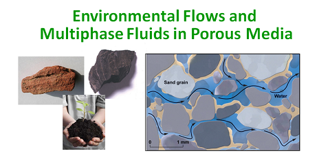
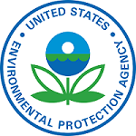

Welcome to Cheng's "Hydro-GeoResources & Environment"!
The research of my group focuses primarily on fluid flow and contaminant transport (i.e., water, oil/hydrocarbons, solutes) in saturated and unsaturated porous media (natural / engineered environmental systems) over scale: Water-Energy-Food nexus. Recent projects include and not limit to Managed Aquifer Recharge (MAR), Flood-Stormwater Management Experiments & Modeling, Drought and Water Supply, Hydrodynamic Mixing and Water-Nutrient Transport Modeling, Brackish Water-Freshwater Systems etc.
My graduate and undergraduate students primarily conduct field-/lab-/computer-based research that involves one or more of the following basic components: field mapping/data collection of hydrologic systems, hydro-geological data analysis, lab water and/or porous media analysis, GIS, numerical modeling and analysis of hydrologic systems. Data collected serve to answer questions related to water flow and contaminant transport fate and remediation processes, groundwater-surface water interactions, soil vadose zone hydrology, and groundwater interactions with eco-systems (water availability, water supply, water quantity & water quality) under changing climate conditions (drought, flood).
Join M.S. or Ph.D. Programs


Prospective Students
I am always looking for highly motivated students who are passionate about applied environmental geosciences and engineering (Applied Groundwater Hydrology, Vadose Zone Hydrology, Contaminant Transport, and Environmental Remediations). Numerous graduate support are available. I would love to talk to you about my active research projects or about your own research interests.
Before applying through graduate college portal, please email me for further information.
Current available positions (graduate and undergrad)
1. Water Resources Research (groundwater & surface water interactions)
2. Environmental Remediation (soil & groundwater)
3. Climate-Smart Water Management (drought & flood)
Dr. Chu-Lin Cheng
Associate Professor
School of Earth, Environmental, and Marine Sciences (SEEMS)
Department of Civil Engineering (CIVE)
University of Texas - Rio Grande Valley
Phone: 956-665-2464
Email: chulin.cheng [AT] utrgv.edu
Short CV | Faculty Profile | SEEMS Page | CIVE Page
Recent News
08-25-2026 -- Congrats to Ivan for the MX scholarship award towards his Ph.D. study.
08-17-2026 -- Welcome Ivan, Alex, and Andrew to Hydro Group.
07-27-2026 -- Congrats to Abby and team for the ESAA UG Research award.
07-16-2026 -- Saika's manuscript Machine Learning in Water Quality Assessment accepted for publication (MDPI-Water: IF 3.5). Congrats.
06-12-2026 -- Cheng invited to present at the National Changhua University of Education: "Machine Learning Applications in Water and Environmental Engineering".
05-22-2026 -- Congrats to Fahad for the 2nd place award in graduate research poster presentation at 2026 LRGV Stormwater Management Conference.
05-22-2026 -- Cheng invited to present at the 2026 LRGV Stormwater Management Conference: "Flood and Drought Mitigations: Engineering Porous Media".
05-18-2026 -- UTRGV 26'HAZWOPER 40-HR certification (UTHC-Houston) training for environmental remediation and consulting jobs (May 18-22).
04-13-2025 -- Saika successfully passed her MS thesis defense. Congrats.
03-13-2026 -- Fahad's manuscript Machine Learning in Enhancing Evaporation Estimation Modeling accepted for publication (MESE: IF 2.9). Congrats.
01-26-2026 -- Saika selected for 2026 CIVE CECS Outstanding Graduate Student Award. Congrats!
01-13-2026 -- Congrats to Saika for being awarded again CHI Educational grant for water resources management.
09-02-2025 -- Welcome Fahad back to Hydro group as a Ph.D. student.
08-05-2025 -- Fahad successfully passed his MS thesis defense. Congrats. Fahad will join Ph.D. program in Fall (Computer Science with Civil Engineering applications)
07-22-2025 -- Congrats to Mehjabeen for being awarded student scholarship to attend 2025 Texas Groundwater Summit (Texas Alliance of Groundwater Districts).
06-01-2025 -- Sumiaya published one of her thesis chapters in Journal Water-MDPI (Soil-Groundwater Pollution Investigations). Congrats!
05-19-2025 -- UTRGV 25'HAZWOPER 40-HR certification (UTHC-Houston) training for environmental remediation and consulting jobs (May 19-23).
04-17-2025 -- Sumiaya successfully passed her MS thesis defense. Congrats.
04-11-2025 -- Congrats to Sumiaya for accepting job offer (before defense/graduation). Sumiaya will be joining SFWMD Water Supply Division as a Groundwater Modeler III.
03-24-2025 -- Congrats to Saika for being awarded International Association of Hydrogeologist (IAH) student membership for 2025-2027 (eight students selected in U.S. National Chapter).
12-13-2024 -- Fahad and Cheng presented at 2024 AGU (DC).
11-25-2024 -- Congrats to Saika for being awarded CHI Educational grant for water resources management.
10-05-2024 -- Cheng presented at the 2024 Texas Hydro Geo Workshop. (9 ENVR students and 2 alumni attended the workshop).
08-26-2024 -- Congrats to John for starting Ph.D. program (Civil Material Engineering/Science) at UTRGV. John interned at ORNL for Summer 2023 Geothermal Internship (modeling). (DOE news link)
08-26-2024 -- Welcome Saika and Mehjabeen to Hydro group.
08-23-2024 -- Congrats to Sumiaya for completing GeoHydrology Internship at Kansas Geologic Survey/University of Kansas.
08-16-2024 -- Congrats to Hugo for completing Geothermal Internship at ORNL (CT imaging). (DOE news link)
05-29-2024 -- Congrats to Fahad for the 1st place award in graduate research poster presentation at 2024 LRGV Stormwater Management Conference.
05-20-2024 -- UTRGV 24'HAZWOPER 40-HR certification (UTHC-Houston) training for environmental remediation (May 20-24).
05-17-2024 -- EPA Border 2025 proposal (Stormwater Management-Water Quality) selected for funding. Congrats to the team Drs. Kang (lead PI), Cheng & Pereira! (link)
04-09-2024 -- Congrats to Sumiaya for being selected for KU-Kansas Geologic Survey 2024 GeoHydrology Summer Internship.
More